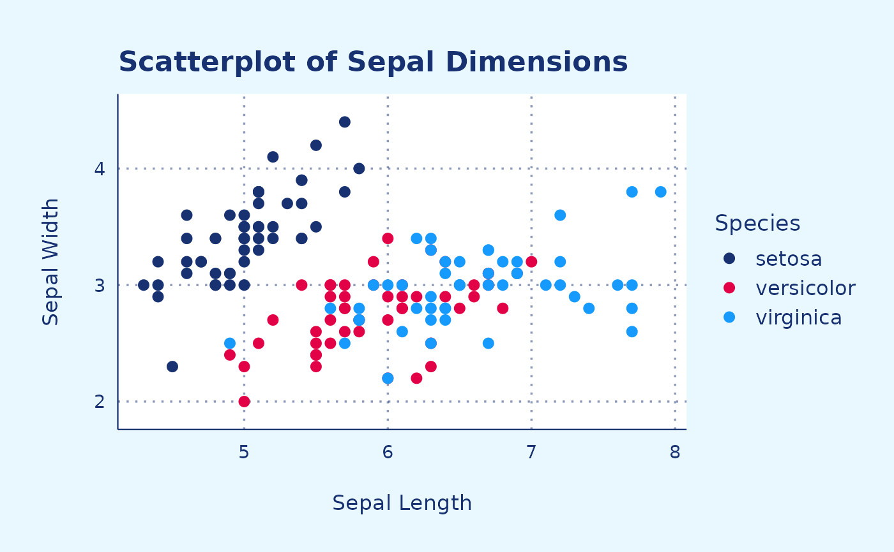
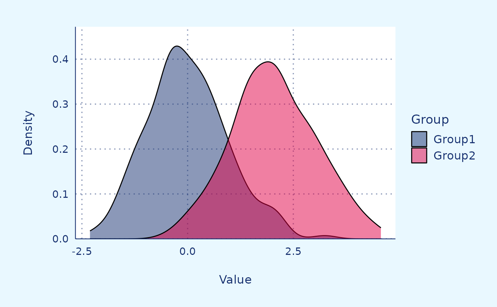
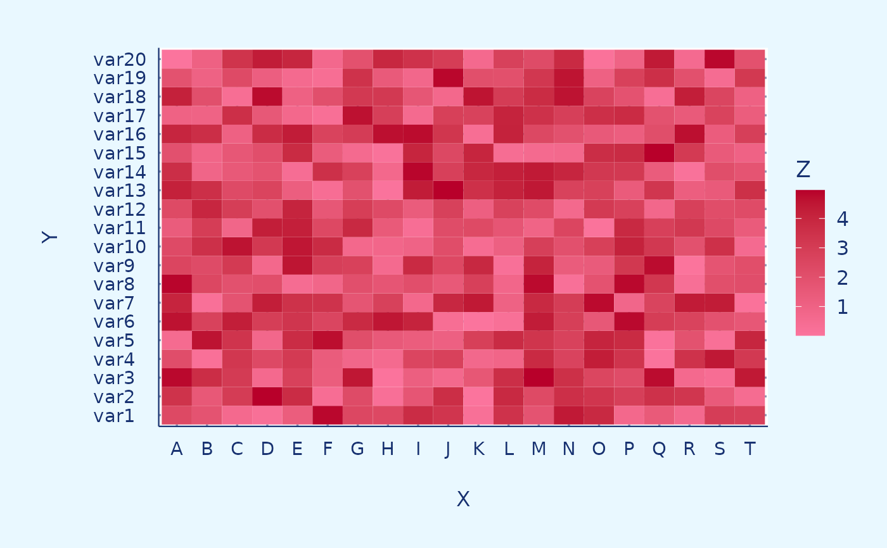
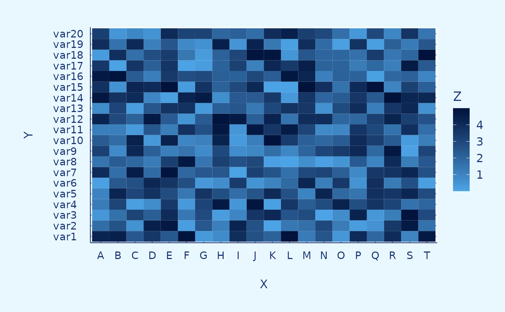
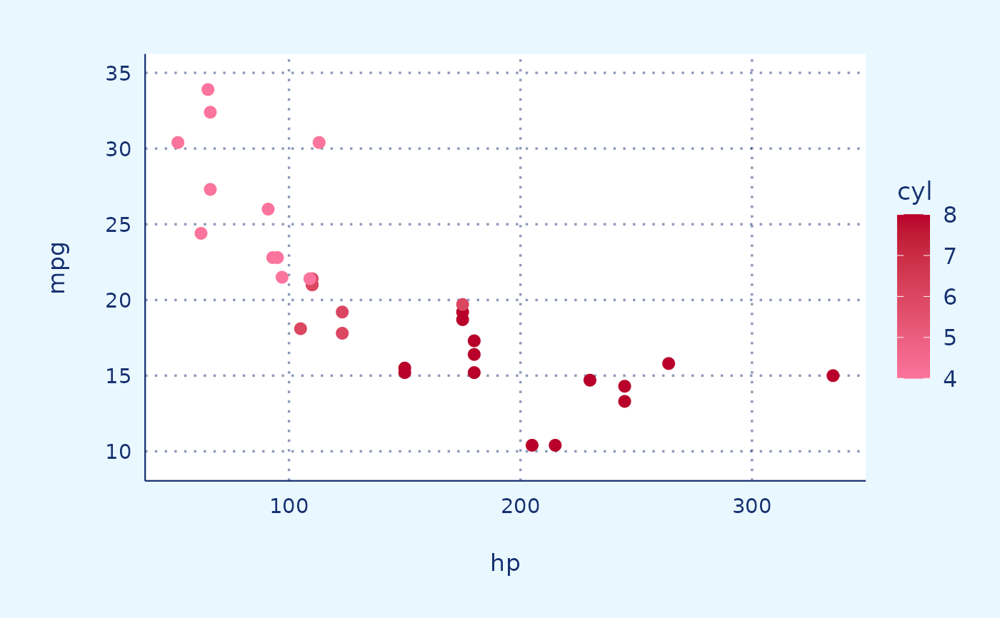
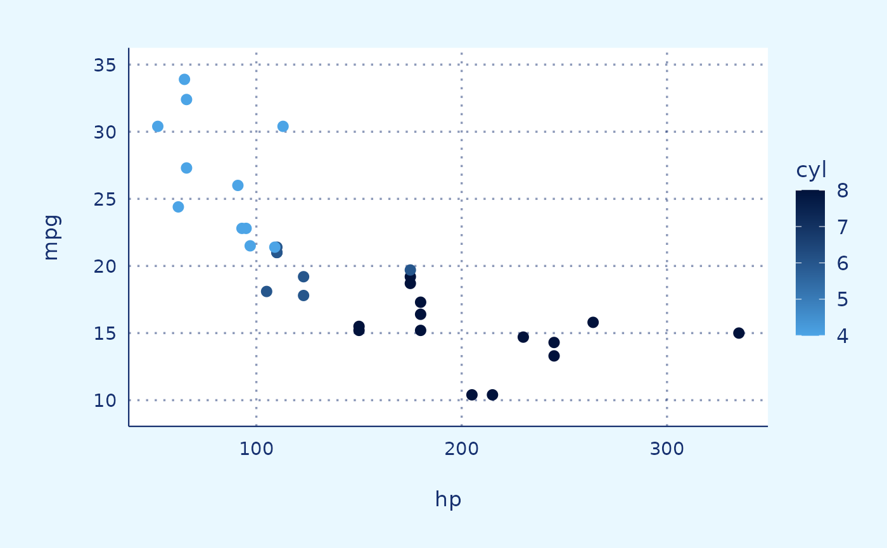

Color scale function
scale_RR.RdColor scale function
Fill scale function
Continuous fill scale (red)
Continuous fill scale (blue)
Continuous color scale (red)
Continuous color scale (blue)
Usage
scale_color_RR(...)
scale_fill_RR(...)
scale_fill_continuous_RR_red(...)
scale_fill_continuous_RR_blue(...)
scale_color_continuous_RR_red(...)
scale_color_continuous_RR_blue(...)Arguments
- ...
Arguments passed on to
continuous_scalescale_nameThe name of the scale that should be used for error messages associated with this scale.
paletteA palette function that when called with a numeric vector with values between 0 and 1 returns the corresponding output values (e.g.,
scales::area_pal()).nameThe name of the scale. Used as the axis or legend title. If
waiver(), the default, the name of the scale is taken from the first mapping used for that aesthetic. IfNULL, the legend title will be omitted.breaksOne of:
NULLfor no breakswaiver()for the default breaks computed by the transformation objectA numeric vector of positions
A function that takes the limits as input and returns breaks as output (e.g., a function returned by
scales::extended_breaks()). Also accepts rlang lambda function notation.
minor_breaksOne of:
n.breaksAn integer guiding the number of major breaks. The algorithm may choose a slightly different number to ensure nice break labels. Will only have an effect if
breaks = waiver(). UseNULLto use the default number of breaks given by the transformation.labelsOne of:
NULLfor no labelswaiver()for the default labels computed by the transformation objectA character vector giving labels (must be same length as
breaks)An expression vector (must be the same length as breaks). See ?plotmath for details.
A function that takes the breaks as input and returns labels as output. Also accepts rlang lambda function notation.
limitsOne of:
NULLto use the default scale rangeA numeric vector of length two providing limits of the scale. Use
NAto refer to the existing minimum or maximumA function that accepts the existing (automatic) limits and returns new limits. Also accepts rlang lambda function notation. Note that setting limits on positional scales will remove data outside of the limits. If the purpose is to zoom, use the limit argument in the coordinate system (see
coord_cartesian()).
rescalerA function used to scale the input values to the range [0, 1]. This is always
scales::rescale(), except for diverging and n colour gradients (i.e.,scale_colour_gradient2(),scale_colour_gradientn()). Therescaleris ignored by position scales, which always usescales::rescale(). Also accepts rlang lambda function notation.oobOne of:
Function that handles limits outside of the scale limits (out of bounds). Also accepts rlang lambda function notation.
The default (
scales::censor()) replaces out of bounds values withNA.scales::squish()for squishing out of bounds values into range.scales::squish_infinite()for squishing infinite values into range.
transFor continuous scales, the name of a transformation object or the object itself. Built-in transformations include "asn", "atanh", "boxcox", "date", "exp", "hms", "identity", "log", "log10", "log1p", "log2", "logit", "modulus", "probability", "probit", "pseudo_log", "reciprocal", "reverse", "sqrt" and "time".
A transformation object bundles together a transform, its inverse, and methods for generating breaks and labels. Transformation objects are defined in the scales package, and are called
<name>_trans(e.g.,scales::boxcox_trans()). You can create your own transformation withscales::trans_new().expandFor position scales, a vector of range expansion constants used to add some padding around the data to ensure that they are placed some distance away from the axes. Use the convenience function
expansion()to generate the values for theexpandargument. The defaults are to expand the scale by 5% on each side for continuous variables, and by 0.6 units on each side for discrete variables.positionFor position scales, The position of the axis.
leftorrightfor y axes,toporbottomfor x axes.superThe super class to use for the constructed scale
Examples
library(ggplot2)
p <- ggplot(iris, aes(x = Sepal.Length,
y = Sepal.Width,
color = Species)) +
theme_RR() +
geom_point_RR() +
labs(title = "Scatterplot of Sepal Dimensions",
x = "Sepal Length",
y = "Sepal Width")
p + scale_color_RR()

# Generate example data
library(ggplot2)
set.seed(123)
data <- data.frame(
Group = rep(c("Group1", "Group2"), each = 200),
Value = c(rnorm(200, mean = 0, sd = 1), rnorm(200, mean = 2, sd = 1)))
p <- data |>
ggplot(aes(x = Value, fill = Group)) +
theme_RR() +
geom_density_RR(alpha = 0.5) +
labs(x = "Value", y = "Density",
fill = "Group")
p + scale_fill_RR()

library(ggplot2)
# Generate example data
x <- LETTERS[1:20]
y <- paste0("var", seq(1,20))
data <- expand.grid(X=x, Y=y)
data$Z <- runif(400, 0, 5)
# Heatmap
p <- data |>
ggplot(aes(X,
Y,
fill= Z)) +
geom_tile() +
theme_RR()
p + scale_fill_continuous_RR_red()

library(ggplot2)
# Generate example data
x <- LETTERS[1:20]
y <- paste0("var", seq(1,20))
data <- expand.grid(X=x, Y=y)
data$Z <- runif(400, 0, 5)
# Heatmap
p <- data |>
ggplot(aes(X,
Y,
fill= Z)) +
geom_tile() +
theme_RR()
p + scale_fill_continuous_RR_blue()

library(ggplot2)
p <- ggplot(mtcars,
aes(x = hp,
y = mpg,
color = cyl)) +
theme_RR() +
geom_point_RR()
p + scale_color_continuous_RR_red()

library(ggplot2)
p <- ggplot(mtcars,
aes(x = hp,
y = mpg,
color = cyl)) +
theme_RR() +
geom_point_RR()
p + scale_color_continuous_RR_blue()
